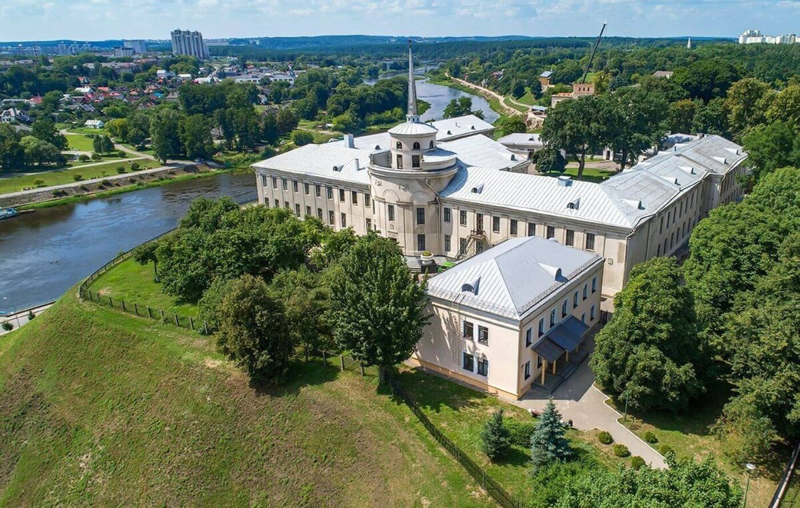
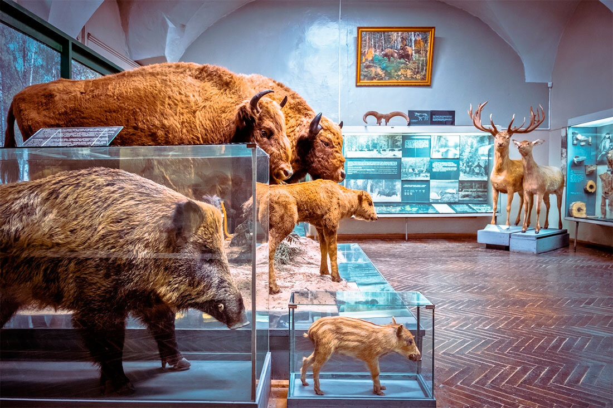
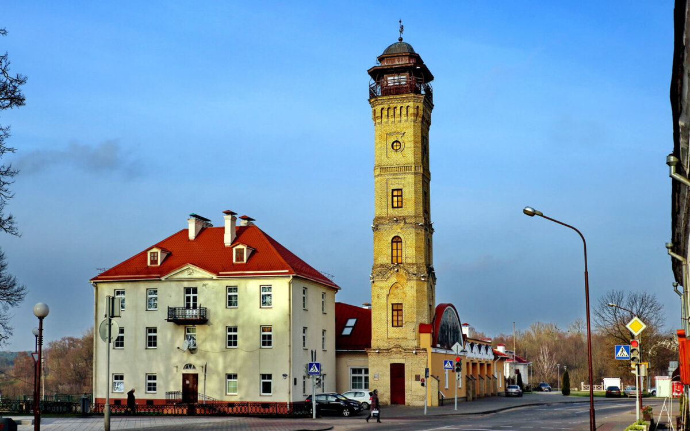
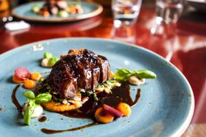
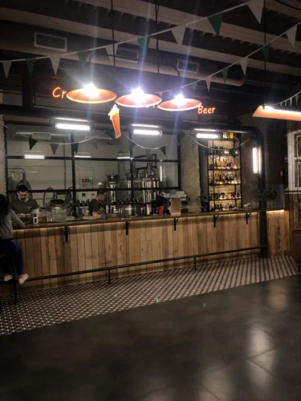

Город Гродно
Гродно-город в Беларуси, административный центр Гродненской области и Гродненского района. Город расположен в западной части области, на берегах Немана, вблизи границы с Польшей и Литвой. Является железнодорожным и автомобильным узлом.
В течение 2014 года город носил звание «Культурная столица Беларуси».
Гродно является одним из важнейших историко-культурных центров Беларуси и одним из старейших городов республики, сохранившим уникальную историческую застройку.
Добро пожаловать в Гродно!
| Город | Гродно |
| Население | 361 115 человек. |
| Площадь | 142 км² |
Достопримечательности Гродно
Новый замок
Напротив Старого замка в середине XVIII века выстроили его младшего брата — Новый замок. Приказ о его возведении отдал польский король и великий князь литовский Август III, желавший иметь комфортную и роскошную резиденцию в столице Великого княжества Литовского, коей тогда являлся Гродно. Новый замок сохранился куда лучше своего предшественника и выглядит гораздо более подобающим для монаршего дворца. В архитектуре прослеживается влияние Западной Европы, в частности французского барокко. Интерьеры Нового замка так и пестрят роскошью, но при этом выглядит куда более сдержанно, чем тот же Версаль. Увы, до наших дней не дошла католическая часовня и корпус для служащих двора, но в остальном комплекс сохранился в весьма неплохом состоянии.
Гродненский историко-археологический музей
Экспозиции Гродненского историко-археологического музея располагаются сразу в нескольких корпусах Старого и Нового замков. Основали музей в далеком 1920 году, а для посетителей учреждение открылось пару лет спустя. Часть экспозиции — это места археологических раскопок, где находятся руины ранних построек Старого замка. В остальном же выставки заняты разнообразными артефактами прошлого, начиная от одежды, керамики и предметов быта, заканчивая оружием, доспехами, ювелирными украшениями, нумизматическими коллекциями и т. д. Город Гродно существует уже почти девять столетий, поэтому будьте уверены, что в музее вас ожидает много интересных и необычных экспонатов.
Пожарная каланча
Практически в каждом европейском городе в былые времена стояла каланча — высокая башня, предназначенная для пожарных. На её вершине регулярно дежурили дозорные, вглядываясь в горизонт на предмет обнаружения возгорания. Первая пожарная каланча появилась в Гродно в 1870 году, а вот нынешняя, каменная, была построена в начале прошлого столетия. Ни время, ни войны не тронули башню, поэтому до наших дней она дошла в превосходном состоянии. Надобность в использовании её по назначению давно отпала, поэтому сегодня внутри башни расположен музей пожарной службы, где вы узнаете как боролись с огнем в разные времена. Известна башня и благодаря старинной традиции, согласно которой ежедневно в полдень здесь звучат белорусские фанфары — знак того, что в городе всё тихо и спокойно.
Лучшие заведения
ВУГЛI
Расположенный в историческом центре Гродно, ресторан «ВУГЛI» предлагает уникальный опыт для ценителей высокой кухни. В меню вы найдете эксклюзивные мраморные стейки, изысканные морепродукты, а также блюда из мяса, птицы, рыбы, бургеры и дичи, приготовленные на гриле. Каждое блюдо приобретает особый вкус и аромат благодаря использованию живых углей в хоспере — это придает нашим творениям неповторимый колорит. Заведение создано для тех, кто стремится расширить свои гастрономические горизонты, развивать свой вкус и наслаждаться жизнью во всех ее проявлениях.
Boboli
Заведение берет свое начало в садах Боболи, что рядом c Флоренцией. Этот парк, созданный еще в XVI веке, сегодня один из самых известных в мире.
Внутри заведения много отсылок к нему, а главная – лимонный зал на втором этаже. Его названием сказано много: интерьер выполнен в стиле лимонных деревьев, на потолке и стенах – словно в парке – множество плодов. К теплому сезону растений и цветов станет еще больше!
Формат кухни (необистро) заведения подразумевает под собой приготовление простых и понятных блюд – своего рода авторский comfort-food, представленный привычным меню.
Найдется все – от мясных блюд и морепродуктов до пасты и супов. Разнообразные десертов и коктейльной карты напитков также присутствуют. Все блюда и напитки подаются в авторском исполнении.
Гости

Ресторан-пивоварня «Гости» на Замковой 3 взяла на себя ответственность за новую историю создания пенного напитка в городе. Небольшая пивоварня располагается в самом центре города и занимает место на одном из этажей исторического здания.
Замковая 3 имеет свою историю: в XIX веке здесь располагалось православное братство. Сейчас помещение переформатировано и делится на несколько зон: на первом этаже за стеклом находится сама пивоварня, сразу возле неё – барная стойка, которая позволяет наблюдать за всем процессом создания пенного напитка. На солнечной стороне первого этажа отделена зона для завтраков, ближе к пивоварне – танцпол с импровизированной сценой для выступления музыкальных групп.
Второй этаж дает возможность отделиться от шумного потока гостей и собраться уютной компанией у камина и даже пригласить маленьких гостей. Много деталей – как аутентичных, так и брутально-смелых – можно найти в интерьере ресторана.